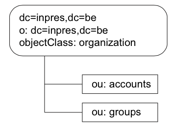

Cette section décrit l’installation et la configuration du serveur OpenLDAP sur une machine Tru64 5.1B. La machine utilisée pour les tests est machiavel (voir figure 2.1). La version de OpenLDAP fournie avec le système d’exploitation Tru64 5.1B est la version 2.0.27. Par conséquent, le protocole LDAPv3 est supporté.
Le logiciel OpenLDAP peut être installé en ligne de commande au moyen de l’utilitaire setld5 ou à partir d’une interface graphique lancée par la commande dusetup. La procédure d’installation via l’interface graphique est reprise ci-dessous. Par défaut, le package OpenLDAP est installé sous le répertoire /usr/internet/openldap.
Monter le cdrom "associated product volume 1"
# mount /dev/disk/cdrom0c /cdrom
lancer l’utilitaire d’installation graphique et sélectionner le package OpenLDAP.
# /cdrom/dusetup
Créer le répertoire pour la base de données
# mkdir /data/openldap/var/db
Limiter l’accès du répertoire à l’utilisateur root
# chmod 0700 /data/openldap/var/db
Le package OpenLDAP installé, il faut maintenant configurer le serveur via le fichier slapd.conf situé sous le répertoire /usr/internet/openldap/etc/. Le script config_openldap.sh développé par HP permet de le faire de façon interactive. Il faut fournir le suffix de l’annuaire, un DN et un mot de passe pour l’administrateur. Même si le mot de passe de l’administrateur est chiffré, il vaut mieux interdire tout accès en lecture (0600) au fichier slapd.conf. Voici un extrait du fichier généré par le script config_openldap.sh :
include /usr/internet/openldap/etc/schema/core.schema
include /usr/internet/openldap/etc/schema/cosine.schema
include /usr/internet/openldap/etc/schema/nis.schema
pidfile /data/openldap/var/openldap_slapd.pidfile
argsfile /data/openldap/var/openldap_slapd.args
#######################################################################
# ldbm database definitions
#######################################################################
database ldbm
suffix dc=inpres,dc=be
rootdn cn=root,dc=inpres,dc=be
rootpw {SSHA}54ZUYZi68u/V5hbdesMO6kAUIohl3YrH
directory /data/openldap/var/db
access to attr=userpassword
by self write
by anonymous auth
by users read
by * compare
Le fichier de configuration du serveur OpenLDAP est divisé en deux sections. La première (lignes 10 à 15) définit les paramètres globaux de configuration du serveur. La deuxième section (lignes 21 à 31) est réservée à la configuration des différents annuaires gérés par le serveur (un seul dans l’exemple). Le tableau 2.2 reprend les principaux paramètres globaux tandis que le tableau 2.3 décrit les paramètres spécifiques à la configuration d’un annuaires.
| nom | description |
|---|---|
| include | Permet d’inclure les schémas définissant les objets utilisables dans l’annuaire. textttcore.schema est le schéma de base obligatoire. |
| pidfile | Emplacement du fichier contenant le pid (Process Identifier) du processus slapd. |
| argsfile | Fichier où est enregistré la commande et les arguments utilisés pour démarrer slapd. |
| loglevel | Niveau de débogage du serveur. |
Tab. 2.2 – Paramètres globaux de configuration du serveur OpenLDAP
| nom | description |
|---|---|
| database | Type de la base de données utilisée pour stocker physiquement l’annuaire. |
| suffix | Nom distinctif (DN) du noeud racine de l’annuaire. |
| rootdn | DN de l’administrateur. |
| rootpw | Mot de passe de l’administrateur. |
| directory | Répertoire pour les fichiers de la base de données. Le répertoire doit exister avant de lancer le serveur slapd. Pour plus de sécurité, ce répertoire ne doit être accessible que par l’utilisateur root (mode 0700). |
Tab. 2.3 – Paramètre de configuration des annuaires OpenLDAP
Le script config_openldap.sh ne se contente pas de créer le fichier de configuration du serveur (slapd.conf) mais crée également l’annuaire dont la racine est spécifié par le paramètre suffix. Dans l’extrait repris plus haut, l’annuaire est créer avec dc=inpres,dc=be comme contexte de nommage. Les différents fichiers contenant physiquement l’annuaire sont enregistrés sous le répertoire /data/openldap/var/db (paramètre directory).
L’entrée cn=root,dc=inpres,dc=be (ligne 23) est définit comme utilisateur administrateur et possède les droits en lecture et écriture sur tout l’annuaire. Le mot de passe associé à cet utilisateur est également stocké dans le fichier slapd.conf (paramètre rootpw). Le script config_openldap.sh évite de stocker le mot de passe en texte clair en le chiffrant au moyen de l’algorithme SSHA (Salted Secure Hash Algorithm). OpenLDAP supporte plusieurs algorithmes de chiffrement dont MD5 et SHA.
Par défaut, config_openldap.sh crée une ACL (voir Chapitre 1) sur l’attribut userpassword. Ce dernier contient le mot de passe associé à un utilisateur LDAP. Par conséquent, il est prudent de restreindre son accès au moyen de d’ACL. Pourtant, afin de faciliter la suite des tests, il est préférable d’autoriser un accès en lecture à tout l’annuaire pour tout le monde6. En effet, pour l’instant, la sécurité de l’annuaire n’étant pas primordiale (la sécurité sera abordée en détail au chapitre 4), l’ACL suivante est suffisante.
access to * by * read
Comme expliqué plus haut, le script config_openldap.sh modifie le fichier slapd.conf mais va également mettre à jour la base de données. Il crée l’entrée de type organization correspondant au suffixe dc=inpres,dc=be et deux objets organizationalUnit. Le contenu de l’annuaire, convertit au format LDIF, est donné ci-dessous.
dn: dc=inpres,dc=be dc: inpres
objectClass: dcObject
objectClass: organization
o: dc=inpres,dc=be
dn: ou=accounts, dc=inpres,dc=be
ou: accounts
description: Accounts
objectClass: organizationalUnit
dn: ou=groups, dc=inpres,dc=be
ou: groups
description: groups
objectClass: organizationalunit
La figure 2.2 représente le DIT7 créé par le script config_openldap.sh. Les en- trées ou=account et ou=groups sont destinées à contenir des comptes et des groupes d’utilisateurs. Ainsi, par défaut, OpenLDAP est configuré pour gérer et centraliser les comptes des utilisateurs du système8.

Fig. 2.2 – DIT créer par défaut
Le processus serveur LDAP slapd (stand-alone LDAP daemon) peut être lancé en appelant directement le fichier binaire.
# /usr/internet/openldap/libexec/slapd
soit en utilisant le script openldap
/sbin/init.d/openldap start
Après une mise à jour du fichier de configuration slapd.conf, il faut redémarrer le démon slapd pour qu’il prenne en compte les dernières modifications.
# /sbin/init.d/openldap stop
# /sbin/init.d/openldap start
Pour arrêter proprement le processus slapd et lui permettre de vider ses caches, il est préférable de lui envoyer le signal d’interruption (sigint) plutôt que le signal sigkill.
kill -INT <pid du processus slapd>
L’utilisation de la commande ps permet de s’assurer que le processus serveur slapd soit bien démarré.
# ps -A | grep slapd
Plusieurs clients LDAP en ligne de commande sont fournis avec le package OpenL- DAP. Sous Tru64, ces outils sont installés par défaut dans le répertoire /usr/internet/openldap/bin. Le tableau 2.4 décrit les commandes disponibles pour contacter un serveur OpenLDAP.
| nom | description |
|---|---|
| ldapsearch | Se connecte au serveur et effectue une recherche dans l’an- nuaire. |
| ldapmodify | Premet de réaliser des modifications sur les objets enregistrés dans l’annuaire. |
| ldapadd | Ajoute dans l’annuaire les entrées lues sur l’entrée standard (clavier) ou dans un fichier. |
| ldapdelete | Efface une ou plusieurs entrées correspondantes aux DN pas- sés en argument. |
| ldapmodrdn | Modifie le RDN (Relative Distinguished Name) d’une entrée. |
| ldappasswd | Change le mot de passe associé à une entrée (attribut userPassword). |
Tab. 2.4 – Clients OpenLDAP en ligne de commande
La commande ldapsearch peut être utile pour vérifier si le serveur réagit aux re- quêtes des clients et s’il est en mesure de servir les données stockées dans l’annuaire. Un exemple d’utilisation de cette commandes est donné ci-dessous.
ldapsearch -x -b dc=inpres,dc=be -h localhost -D cn=root,dc=inpres,dc=be -W "objectClass=*" dn
Enter LDAP Password:
version: 2
#
# filter: (objectclass=*)
# requesting: dn
#
# inpres, be
dn: dc=inpres,dc=be
# accounts, inpres, be
dn: ou=accounts,dc=inpres,dc=be
# groups, inpres, be
dn: ou=groups,dc=inpres,dc=be
# search result
search: 2
result: 0 Success
# numResponses: 4
# numEntries: 3
Avant de pouvoir effectuer des recherches dans l’annuaire, la commande ldapsearch doit s’authentifier auprès du serveur slapd localisé par l’option -h. Pour cela, il est possible de fournir un nom d’utilisateur sous forme de DN et un mot de passe. Dans l’exemple, l’utilisateur cn=root,dc=inpres,dc=be est utilisé. L’option -W demande à ldapsearch qu’elle fournisse à l’utilisateur une invite pour saisir son mot de passe. L’option -x est nécessaire pour demander une authentification simple (SASL étant utilisé par défaut).
Si ldapsearch réussi à s’authentifier via l’utilisateur cn=root, le résultat de la recherche est retourné et affiché au format LDIF. Dans l’exemple, l’entrée dc=inpres,dc=be (option -b) est utilisée comme entrée de base pour la recherche. Le filtre "objectClass=*" est également appliqué (ici tous les objets) et seul l’attribut dn est demandé comme résultat.
5Utilitaire en ligne de commande pour la gestion des packages sous Tru64.
6La gestion des habilitations sera vue au chapitre 4
7 Sa structure sera revue pour s’adapter au client Solaris 8
8 Cette approche est abordée en détail au chapitre 3 (Authentification système via LDAP)